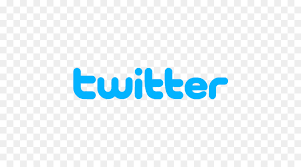
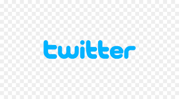

World Congress on Industrial Biotechnology ( WCIB )
World Congress on Industrial Biotechnology(WCIB) will be held in Caracas,Venezuela during 08th Jan-09th Jan 2022 as the Conference of WCIB . WCIB is sponsored by ConferenceFora. It aims to be one of the leading conferences for presenting novel and fundamental advances in the fields of Industrial Biotechnology. It also serves to foster communication among researchers and practitioners working in a wide variety of scientific areas with a common interest in Industrial Biotechnology
The conference provides a platform for professionals involved in Industrial Biotechnology to exchange knowledge and gain an insight into the state of the art in the current technology, techniques and solutions in Industrial Biotechnology as they have been developed and applied in different countries. Participants include a wide variety of stakeholders from research and academia, to industrial sectors as well as government organizations.
Do you have any question? Feel free to contact us:
biotech@gmail.com
We are eager to disscus about science.
The conference provides a platform for professionals involved in Industrial Biotechnology to exchange knowledge and gain an insight into the state of the art in the current technology.

Other WCIB programs
We are not the first and the only! Discover more events and information below:
 
